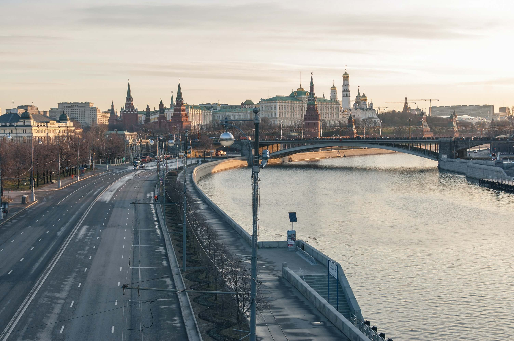

From Homeland to Homeland
An epic journey from Kentucky to Burundi through Wales and Ukraine

Know the places your online pals come from a little better
Every human being is an artist, a freedom being, called to participate in transforming and reshaping the conditions, thinking, and structures that shape and inform our lives.
- Joseph BeuysThe town of Practicum has brought together professionals from different corners of the world. Today, Practicum Art Gallery is proud to present stories and pictures from some of the people who dedicate their time and effort to making the future tech professionals of this town feel at home. Each of us has a unique story about the place we come from. Feel free to add your own story and a piece of visual art dedicated to your hometown to our collection. No matter where you're from, we're glad that you're our neighbor.


-
Kyiv, Ukraine
artist
Natalia Dolgushina, content producer
 But this artwork as NFT
But this artwork as NFTKyiv (or Kiev), Ukraine's capital, is a large city located on the shores of the Dnipro river. Of course, no one in their right mind would swim in the river, unless they grew up here, in which case they've probably tried it at some point. Summers are hot here, and the winters are drafty, but the fall and the spring are are absolutely amazing.
The city itself is a mix of pre-revolution, post-war and soviet architecture, all of it sprinkled with modified balconies. If you're on the right bank of the Dnipro, the landscape is difficult to traverse for people on bikes and those wearing heels. The left bank is considered far less interesting and prestigious though, even by people who live on the far outskirts of the right one.
-
Cricieth, Wales
artist
Steffan Warren, lead editor
Kseniya Glagoleva, project manager
 But this artwork as NFT
But this artwork as NFTThe medieval ruin of Cricieth Castle overlooks the town below from a rock that juts out into the sea. It is thought to have been built by Llewelyn the Great in the 13th century. Some 900 years later, the self-styled Pearl of Wales on the Shores of Snowdonia has become a popular tourist destination during the summer months.
A short walk down the road from the castle, you can enjoy the world's best ice cream at Cadwalader's, whose secret ingredient is rumored to be locally sourced seaweed. Another claim to fame is the fact that Cricieth won the Wales in Bloom award for five years in a row for its spectacular floral displays around town. It was also home to David Lloyd George, the only Welshman ever to hold the office of Prime Minister of the UK.
-
Berea, USA
artist
Travis Turner, author and editor
 But this artwork as NFT
But this artwork as NFTBerea is a small town located in the central part of Kentucky. The town is surrounded by beautiful forests and countryside. It's known as the arts and crafts capital of the state, and visitors will find plenty of shopping opportunities: shops with handmade jewelry, candles, wood items, galleries, glass studios, and more. The town holds a yearly festival celebrating "spoonbread", a local dish made with cornbread and served with a wooden spoon.
However, it's probably known best for the local college. Berea College was founded in 1855 and was the first college in the south to be racially integrated, as well as the first to be coeducational. Somewhat uniquely, it charges no tuition — every student receives a full-tuition scholarship.
-
Muramvya, Burundi
artist
Grevisse Kenguruka, tech editor
 But this artwork as NFT
But this artwork as NFTMuramvya is one of the 18 provinces of Burundi. In the kingdom era, Muramvya was the royal capital and in 2007, because of its cultural and natural landscape, it was added to the UNESCO World Heritage Tentative List. It is located in the center of Burundi, between the country's political and economic capitals.
The weather is rather chilly at night, but during the day, you would think you're in heaven. At 2,665 meters (8,743 ft) above sea level, Mount Teza is one of the coldest places in the province. But that cool breeze allows for one of the largest plantations of tea and coffee in the country, which make up the bulk of Burundi's exports.
The Kibira National Park, one of the largest wildlife reserves for apes, overlaps four provinces, including Muramvya. This National Park lies at the apex of the beautiful mountains of the Congo-Nile Divide, ranging between 1550 and 2660 meters of altitude. It is filled with beautiful vegetation, and a source for the various rivers and streams which provide water around the country.
-
Moscow, Russia
artist
Maria Konstantinov, web developer
But this artwork as NFTMoscow is the capital city and the most populous federal subject of Russia. The city is a major political, economic, cultural and scientific center in Russia and in Eastern Europe.
Moscow is situated on the Moskva River in the Central Federal District of European Russia making it the world's most populated inland city. The city is well known for its unique architecture which consists of many different historic buildings such as Saint Basil's Cathedral with its brightly coloured domes. With over 40 percent of its territory covered by greenery, it is one of the greenest capitals and major cities in Europe and the world, having the largest forest in an urban area within its borders-more than any other major city even before its expansion in 2012. In the course of its history the city has served as the capital of a progression of states, from the medieval Grand Duchy of Moscow and the subsequent Tsardom of Russia to the Soviet Union.
Moscow is considered the centre of Russian culture, having served as the home of prestigious Russian artists, scientists and sports figures during the course of its history and because of the presence of many different museums, academic and political institutions and theaters.
Visit us
Year-round Practicum Art Gallery 404 Tim Berners-Lee Ave
Buy tickets